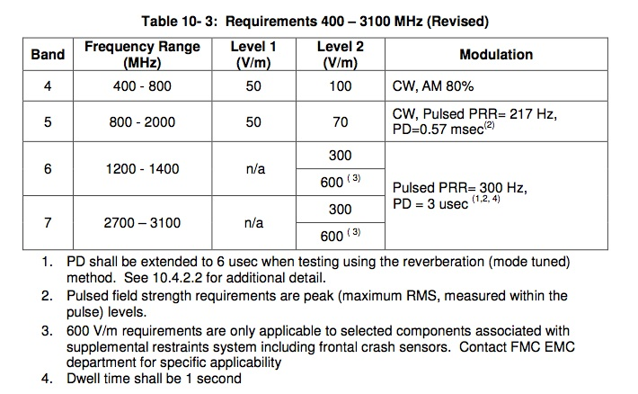
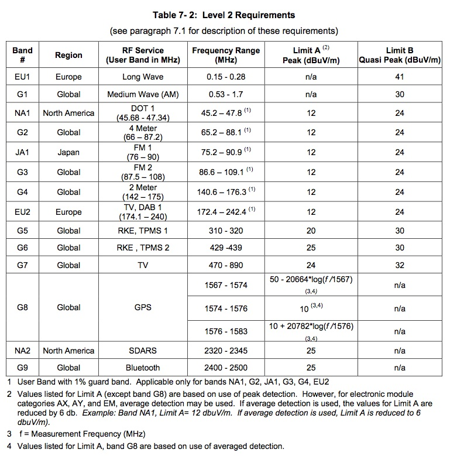
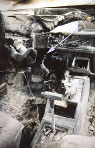
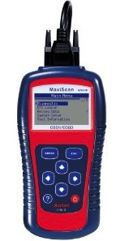

Things You Need to Know
Several aftermarket companies offer devices that plug into the OBD-II port. They record operating data from the port and either store it for later download or upload it to a smartphone and/or the Internet. In some cases, data can also be downloaded to the OBD-II system. While appearing innocuous, these devices can interfere with the operation of the engine, stability control, ABS, traction control, and other systems — to say nothing of their RFI potential. Several automobile manufacturers have issued technical bulletins regarding their essentially illegal use. In some cases, warranty coverage could be denied, especially if pollution control systems are compromised. If you're contemplating using one of these devices, check with your dealer first.
Starting with the 2016 model year, several automobile manufacturers began uploading vehicle data via built-in networking systems. GM's prognostics system transmits engine parameters via OnStar. Ford transmits similar data through their Sync 3 system and any connected smartphone. Technically, even cockpit audio — which is now being recorded in several GM models — could be relayed back to GM. What they do, or plan to do, with such data remains to be seen.
Modern vehicles often have their electric power steering, braking and stability controls, and transmissions under engine computer control. It is possible to unlock doors, track stolen vehicles, and disable them remotely. More concerning: it's also possible for these systems to be hacked. Forewarned is forearmed.
Basics: Amateur Radio and Warranty Claims
Due to today's litigation climate, it's not uncommon for automobile dealership personnel to tell potential buyers that installing two-way radio equipment will void their vehicle warranty. Nothing could be further from the truth. The common thread seems to be claimed damage from high-level RF generated by amateur radio. This is a blatant misrepresentation of the facts.
Manufacturers go to great lengths to test all of their electronics, both those they make and those they purchase. The included charts from Ford Motor Company represent minimum testing levels — the various on-board devices must pass muster when subjected to the listed RF levels.


You can interfere with vehicle electronics, but not easily damage them. The most likely offenders are improper wiring, poor antenna mounting, common mode issues, and inadequate motor lead choking. Follow these four rules, and interference problems become rare:
- Power connections directly to the battery and/or jump points, fused as close to the connection as possible. Do not use cigar lighter or power-point receptacles as power sources for any radio communication equipment. They're a fire hazard — the wiring is too small for the load, regardless of what the fuse is rated.
- Antennas for two-way radios should be mounted on the roof or rear area of the vehicle. Magnetic-base antennas can affect compass accuracy and cause erratic navigation system operation.
- The antenna cable should be high-quality, fully shielded coaxial cable, kept as short as practical. Avoid routing coax parallel to vehicle wiring over long distances. Control common mode current, and the routing largely doesn't matter.
- Carefully match the antenna and cable to the radio for low SWR. Mount the antenna to avoid RF current on the feedline shield. Improper mounting and matching is the primary cause of excessive common mode current.
Ground loops — caused by mag-mount antennas and using the chassis for DC ground returns — are the hardest RFI problems to find and cure because they mask themselves as ingress RFI. Just because you've never experienced a problem using a mag-mount antenna doesn't mean you're not having any. It just means you haven't discovered them yet. It's entirely possible to cause error codes to be written to the OBD-II-EOBD memory without any obvious symptom appearing to the driver.
Integrated WiFi Networks
Vehicle manufacturers now offer integrated WiFi networks on most models, replete with browser and Internet access via OnStar, Sync, or similar systems. With a home network you normally control what information is uploaded. In the vehicle's case, the manufacturer has the ability to upload virtually every facet of the vehicle's operation without asking permission.
Eventually, vehicles will communicate with other nearby vehicles in a coordinated effort to avoid crashes. When vehicle WiFi networks are integrated with on-board navigation systems, it becomes possible to pinpoint your location, offer alternative routing, and even send advertisements for businesses you're driving near. Currently there are no federal laws or regulations covering what can be uploaded or downloaded from your vehicle. Anyone with a bit of computer savvy can know exactly where you are, what you're doing, and in some cases, what you're saying.
Automated Controls
All passenger vehicles sold in the US are required to have collision-avoidance systems. These use radar and/or infrared sensors to detect an impending collision in front or along the side. Acting in conjunction with ABS, the vehicle speed sensor, cruise control, and electrically-assisted steering, these systems can literally out-think the driver. The current pinnacle of these technologies is Tesla's Auto-Pilot system.
The biggest offenders for RFI ingress into these systems are common mode radiation from the coax and improper power wiring. These are the same issues that affect every other aspect of your installation — which means fixing them properly solves multiple problems simultaneously.
Data Bus Systems
Digital electronics have become pervasive in modern vehicles. Current models have as many as 80 digital processors controlling every facet of operation. Most of these processors communicate over data bus systems. The OBD-II, along with the various on-board processors, uses ISO-defined networking to transfer data between them. These are commonly called B-CAN (Body Chassis Area Network), though other acronyms are used. Honda calls theirs MICS (Multiplex Integrated Control System), operating using bit rates of 10.4 kbps, 33.33 kbps, and 500 kbps. Other makes are similar, and all of them produce birdies up and down the amateur spectrum.
RFI egress from on-board electronics — interference emanating from the vehicle's own digital systems — is much more severe than RFI ingress to those same devices. Automobile manufacturers will not address concerns about these spurious signals. Remember: they are exempt under FCC Part 15 rules (Section 15.103, Exempted Devices).
Some vehicle computer systems use a color burst crystal as an oscillator at 3.579545 MHz. The 41st harmonic is 146.76134 MHz, which falls on or near common 2-meter repeater pairs. Component tolerances can shift this harmonic anywhere from about 146.70 MHz to 146.80 MHz.
There is one very important thing to remember about suppressing the data bus system's digital signatures: you cannot do it by adding ferrite chokes to the data bus wiring. Attempting to do so can disrupt the digital signals that the choke is supposed to be filtering. The only correct course of action is to properly mount your antennas and install common mode chokes on the coax feed and motor lead lines to minimize RF leakage in or out. Do not put ferrite chokes on B-CAN or any other data bus wiring — you will create problems rather than solve them.
Most modern vehicles have transient voltage protection built into the various electronic subassemblies. Even the alternator diodes act as load-dump transient suppressors. However, these devices can be compromised by external battery chargers and 24-volt jump-start battery packs. Forewarned is forearmed.
Event Data Recorders
Event Data Recorders (EDRs — facetiously called "black boxes") record specific data for later retrieval. The OBD-II has been mandated on every vehicle sold in the United States since 1996. The latest iterations record all manner of data from the various on-board devices. The latest versions are referred to as OBD-II-EOBD (Extended On-Board Diagnostics), required on all vehicles starting with the 2012 model year.

Heretofore, OBD-II recorded mostly engine functions such as misfires, inoperative devices, or sensor failures. The various codes are stored, may or may not turn on the MIL (Maintenance Indicator Light), and can be retrieved using a code reader. Later versions include engine RPM, speed, cornering G-forces, braking force, steering angle, throttle position, and temperature — all important when analyzing a crash scenario.
Although not strictly a data recorder, several late-model vehicles are equipped with a voice recorder module that records the last approximately 30 minutes of cockpit audio. Access is restricted by a password supposedly known only to the manufacturer — but a few web searches will locate the password algorithm. You can't erase the recording, and neither can anyone else. Legally, a court order is required for police access, but that's cold comfort if you're involved in a vehicle crash.
Data Corruption
Data corruption caused by RFI ingress and/or egress will often have different effects at different frequencies. You might have no RFI problems on 20 meters but significant problems on another band. Not all RFI-related data corruption will cause error codes to be written to the OBD-II-EOBD memory. And RFI can play havoc with individual data sensors connected to the various on-board electronic devices without ever triggering a visible fault.
Federal courts have ruled that the software and/or firmware controlling every facet of vehicle operation is owned by the manufacturers. This opens up significant questions regarding data corruption that might be caused by excessive RFI ingress. However, automobile manufacturers do a very creditable job of hardening their electronics against RFI ingress. Ford Motor Company's Electromagnetic Compatibility documentation is a prime example — though aimed at OEM suppliers, it's worth reading if you have an ingress problem.
Code Readers
One way to know if you have corrupted data, other than waiting for the MIL to illuminate, is to own a code reader. Auto Zone, O'Reilly, Pep Boys, and others sell OBD-II and EOBD readers ranging from $29 to well over $200 depending on capability. They come with books or CD-ROMs listing all error codes. Most can also turn off the MIL and clear the memory.
Make sure any reader you buy is capable of reading EOBD (extended on-board diagnostic) codes. All US vehicles made after the 2012 model year must have EOBD — including light and medium-duty trucks and SUVs. Considering that dealers charge an average of $50 just to reset the MIL and read codes, an OBD-II-EOBD reader can pay for itself in one visit.
Some manufacturers password-encode access to extended data. The password algorithm is often findable online. In some high-end units, extended data cannot be erased at all — it requires a code sent via the navigation or cellphone interface. And some collected data is sent back to the manufacturer on the same interface, without the driver's knowledge.
Electronic Engine Controllers
Late-model vehicles use their Electronic Engine Control (EEC) to monitor the alternator's voltage and current. These readings help control fuel injector timing, mixture, and fuel economy. As a result, at slow engine speeds when the alternator is under a varying heavy load (amplifier use, for example), the engine may hunt — stumble and misfire. In some cases, this will cause an error code to be sent to the OBD-II, which turns on the MIL.

Error codes can actually help you find RFI problems. For example, a code related to the throttle position sensor pointed to an RFI ingress problem that was cured by installing a ferrite bead on the sensor's wiring harness. Just because the MIL isn't on doesn't mean there are no stored error codes — some may not illuminate the light. Some may not be amateur radio related and could indicate an actual mechanical or electrical problem.
The OEM alternators on most newer vehicles use a double-wound field coil with 12 diodes. For example, the Honda Ridgeline comes with a 130-amp alternator physically smaller than Honda's old 105-amp 6-diode unit. All Honda vehicles now use this type (except hybrids), as do most other makes and models. The upgrading in amperage is good news for high-power mobile operators.
Since 1996, all vehicles have factory-equipped fuel vapor purge canisters to reduce hydrocarbon emissions. These systems continue to run until engine oil pressure drops to zero. Some systems — notably Toyota's — do their diagnostic testing long after the engine has been shut off, rather than at engine startup. Testing may occur up to five hours after shutdown, once the coolant drops below 95°F. So if you're in your garage and hear something running, it's probably the vacuum purge pump. The data bus is also operating, so you might hear hash from both — but this is nothing to worry about once you know what it is.
Battery Monitoring Systems
Due partly to new fuel economy standards, more vehicles are designed to shut off the engine when it isn't needed — at a stop light, for example. To make this work safely, special devices monitor battery condition. If the battery isn't up to snuff, or the accessory load is such that the battery might not be able to restart the engine, the engine remains running or restarts as needed.
Both the voltage and the current draw from the battery are measured. The current measurement incorporates a Hall device located near the battery — on Ford and Nissan (et al.), the Hall device is part of the negative battery connector. In addition to the BMS, most systems incorporate a voltage booster to maintain voltage to navigation, entertainment, and instrument cluster during engine-off periods.
Battery Monitoring Systems have been with us since BMW introduced them in 2002. Modern EECs with ELD (Electrical Load Detection) measure any load applied to the electrical system and adjust engine settings to match. Imposing SSB's ever-changing power demands often overtaxes EEC systems, potentially causing engine stumbling or erratic shifting as the EEC tries to compensate for the rapidly changing load.
RFI Egress
What we'd all like to see is an equal effort directed toward reducing RFI egress from vehicles. Of particular importance are the emissions from hybrid vehicle control electronics. Prius owners can attest that some are so RFI noisy their AM radios are nearly useless in low-signal areas.
COP (Coil-on-Plug) ignition systems are yet another egress source. While later model units have lower RFI levels than earlier ones, they're far from ideal. As a whole, automobile electronics are a major contributor to the overall background hash we all endure.
Fuel injection systems are yet another bothersome RFI source. The latest direct-injection systems spray fuel directly into the combustion chamber at very high pressure. This requires more powerful injector solenoids, which means greater EMI from each injection event.
LED lighting is another source of RFI egress. OEM LED systems are generally fairly clean, but virtually all aftermarket LED units generate excessive RFI — especially those that use a driver module to power multiple headlight LEDs. Stick with halogens if you're dealing with aftermarket lighting in RFI-sensitive applications.
Automobile manufacturers are exempt from FCC Part 15 rules under Section 15.103 (Exempted Devices). While there are suggestions that exempted devices should meet certain radiation levels, the fact is they are exempt. Until the rules change — not foreseeable — we will continue to deal with ever-increasing levels of RFI egress from modern vehicles. Data bus systems are getting more complex and faster, which actually helps somewhat: higher-speed digital signaling requires better electromagnetic containment at the circuit level. But we won't see vehicles designed primarily with amateur radio operators' receive noise floor in mind.
RFI Ingress
RFI ingress can be annoying, but it's usually curable. Sometimes a single ferrite bead suffices; sometimes a bonding strap helps; sometimes low-current wiring (like antenna motor control leads) needs to be shielded. One very important caveat: for any given RFI problem, what worked on your last installation might not work on this one. Diagnose each installation on its own merits.
RFI ingress can cause sensors to send incorrect data back to their respective control devices. Affected systems may include automatic braking, automatic transmission controls, electric power steering, and vehicle stability systems. If you experience anomalies with any of these systems while transmitting, stop transmitting immediately. The next step is to cure the ingress: change the antenna mounting methodology and/or location, correct the power wiring, do additional bonding, add choking impedance to the antenna motor control leads, and improve common mode current suppression on the coax.
Think Ahead
The vehicle style is usually dictated by family size, the number of vehicles owned, and intended use. It's rare for amateur radio installation planning to be part of a vehicle purchase decision. When it is, the first considerations should be the proposed antenna location, the radio mounting location and methodology, and the alternator capacity needed to support the planned accessory load — keeping safe operation in the forefront throughout.
Some folks lease vehicles and use that as an excuse not to properly install radios and antennas. Dealers typically don't look for NMO mounts when lease vehicles are returned. They look at overall cleanliness, excess mileage, and obvious dings and scratches — including those caused by magnetic-base antenna mounts. Mag mounts increase the likelihood of both ingress and egress RFI, and they leave behind paint damage that is very much a lease-return problem.
Modern Considerations: 2020 and Beyond
The digital electronics landscape in vehicles has continued to evolve rapidly since this material was originally written. Key developments for mobile amateur radio operators:
Over-the-Air Software Updates
Many modern vehicles receive over-the-air (OTA) software updates to engine controllers, transmission control, and even braking systems. After an OTA update, the vehicle's RFI characteristics may change — birdies that were absent can appear, or RFI that was present can disappear. If your installation was working cleanly and suddenly develops new RFI issues, check whether your vehicle received a software update recently.
Advanced Driver Assistance Systems (ADAS)
Current vehicles are packed with radar, lidar, and camera systems for lane keeping, adaptive cruise control, automatic emergency braking, and blind spot monitoring. These systems operate at millimeter-wave radar frequencies (typically 24 GHz and 77 GHz) that are well above the amateur HF bands, but they are sensitive to interference from improperly installed equipment. The same best-practices that prevent HF RFI problems — correct power wiring, proper antenna mounting, common mode chokes — also minimize the likelihood of interfering with ADAS sensors.
EV and Hybrid Data Systems
Battery Management Systems in EVs and PHEVs are far more sophisticated than the BMS found in conventional vehicles. They monitor individual cell voltages, temperatures, and state of charge in real time. The BMS communicates continuously over the vehicle data bus, generating its own RF signature. In a Prius or similar parallel hybrid, the control electronics for the motor-generator system generate significant broadband hash across the HF bands. See the Hybrid & EV article for specific guidance on operating amateur radio in these vehicles.